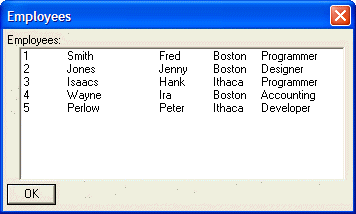

Tabbed List Box Control
To display a list box with multiple columns of data, you use the Tabbed List Box control.
The syntax for a tabbed list box control is:
[.size variable_name^|n1|n2|n?|choice_array] or [.size variable_name^|n1|n2|n?|choice_variable] |
Where n1, n2, n3 etc. are integer values that control the size of each column in the list box. For example, if you specified a formatting string of |1|2|, the list box would be divided into two columns. The total width of the list box would be 3 'logical' units (1+2). Column 1 would be 1 logical unit wide, (or 1/3 of the total width of the list box), and column 2 would be 2 logical units wide (or 2/3 of the total width of the list box). A formatting string of |2|5|2|7| would divide the list into 4 columns, with column widths respectively of 2/16ths, 5/16ths, 2/16ths and 7/16ths or the column width specified by the size parameter.
The entries in the choice_array or choice_variable are separated into columns with the tab character.
Dim employees[100] as C names = <<%a% 1 Smith Fred Boston Programmer 2 Jones Jenny Boston Designer 3 Isaacs Hank Ithaca Programmer 4 Wayne Ira Boston Accounting 5 Perlow Peter Ithaca Developer %a% employees.initialize(names) result=ui_dlg_box("Employees",<<%dlg% Employees:; [.64,10selected^|1|1|3|1|1|employees] ; <*&OK> %dlg% ) |

Lesson 8: Tabbed List Box
 Note : In a later lesson on custom "owner-draw strings" we will show how you can specify explicit tab stops for each column in the list box. In some cases, this will prove to be the easier approach.
Note : In a later lesson on custom "owner-draw strings" we will show how you can specify explicit tab stops for each column in the list box. In some cases, this will prove to be the easier approach.
Next
Limitations
Desktop applications only